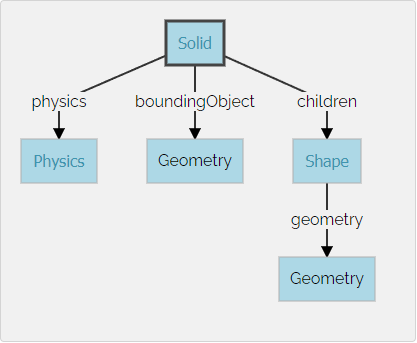

Homework <<
Previous Next >> HW2
HW1
HW1 (5%): 建立由 Box 組成的平面四連桿機構 Webots 模擬場景
操作影片標題: 國立虎尾科技大學 - 機械設計工程系 - cd2025 HW1 - 學員學號
以下將利用 box 節點建立平面四連桿機構的模擬場景, 地面固定桿長度 1m, 寬高各為 0.1m, 第一桿長度 0.4m, 第二桿長度 0.6m, 第三桿長度 0.9m.
Step1: 在可攜程式套件中開啟 Webots - cmd 視窗中輸入 webotsw
Step2: File - New - New Project Directory, 選擇 Y:\tmp\hw1 作為專案目錄, 建立 hw1.wbt, Add a rectangle arena 可以不用勾選
Step3: 若模擬已經開始, 按下 Pause the simulation 或透過 Ctrl + 0 暫停模擬, 利用 Reset simulation 或透過 Ctrl + Shift + t 讓模擬時間回到 t=0, 之後完成階段設定後, 必須讓模擬時間回到 t=0 之後才進行 hw1.wbt 的存檔
Step4: 確定 t=0 後, 按下 Save the current world file 或透過 Ctrl + Shift +s 儲存正在建立的 world 檔案, 之後利用 SciTE 開啟 Y:\tmp\hw1\worlds\hw1.wbt, 檔案內容如下:
#VRML_SIM R2025a utf8
EXTERNPROTO "https://raw.githubusercontent.com/cyberbotics/webots/R2025a/projects/objects/backgrounds/protos/TexturedBackground.proto"
EXTERNPROTO "https://raw.githubusercontent.com/cyberbotics/webots/R2025a/projects/objects/backgrounds/protos/TexturedBackgroundLight.proto"
WorldInfo {
}
Viewpoint {
orientation -0.5773502691896257 0.5773502691896257 0.5773502691896257 2.0944
position 0 0 10
}
TexturedBackground {
}
TexturedBackgroundLight {
}
其中第一行表示此 .wbt 採用 R2025a 所建立, 其格式為 VRML_SIM 模擬語法, 且檔案採用 utf8 編碼
之後則從官方網站取得 TexturedBackground.proto 與 TexturedBackgroundLight.proto 原型節點, 並宣告 Viewpoint 所在的點座標以及方位
Step5: 利用 Add a new object or import an object (or Ctrl + Shift + a) 從 Base nodes 類別中, 選擇建立一個 Robot 節點. 這時假如確定 t=0 按下儲存 hw1.wbt, 則模擬場景將在上述檔案中加上:
Robot {
}
Step6: 由於先前在執行 Tutorial2 時, 已經知道要建立一個簡單的剛體, 如下圖所示, 必須先從建立 Solid 節點, 然後再依序建立運動模擬用的 Shape、碰撞檢測用的 boundingObject 以及物理特性參數.

因此在 Robot 節點下的 children 先建立一個 Solid 節點, 且命名 (DEF) 為 base, 此 Solid 的 name 欄位也設為 base, 而此節點就是用來模擬長度 1m, 寬高各為 0.1m 的固定連桿 (base). 並在 Solid 節點下的 children 建立一個 Shape, 且將此 Shape 命名為 base_shape. 並將 base_shape 下的 geometry 設定為 box 節點.
此時內建的視圖為 Top View, 但並未顯示出全域座標系統, 因此利用 View - Optional Rendering - Show coordinate system 列出座標系統, 透過上視圖, x 座標向右為正, 而 y 座標則向上為正. 為了取得長 1m 的固定桿外形, 因此在上述 box x 方向欄位從內定的 0.1m 改為 1m, 完成固定桿幾何外形的設定.
接著確定 t=0 的狀態下儲存檔案, hw1.wbt 的 Robot 場景內容如下:
Robot {
children [
DEF base Solid {
children [
DEF base_shape Shape {
geometry Box {
size 1 0.1 0.1
}
}
]
name "base"
}
]
}
從上列 hw1.wbt 可以發現除了 children 節點欄位使用 [] 外其餘欄位均以 {} 界定, 其差別為 [] 類似數列, 可以納入多個相同節點物件, 而採 {} 界定的欄位內則各參數設定並不會重複. (AI 詢問提詞: webots 中 .wbt [] 與 {} 有何差別?)
由於在定義 Shape 節點時已經將其 DEF 為 base_shape (DEF 為 Define 定義的意思), 之後可以在設定 boundingObject 碰撞檢測用的 geometry, 利用 USE 重用此一個 Shape 節點外形. 設定完成後 hw1.wbt 成為:
Robot {
children [
DEF base Solid {
children [
DEF base_shape Shape {
geometry Box {
size 1 0.1 0.1
}
}
]
name "base"
boundingObject USE base_shape
}
]
}
Homework <<
Previous Next >> HW2